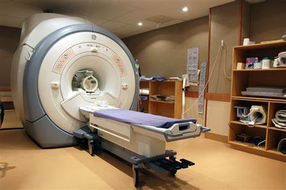
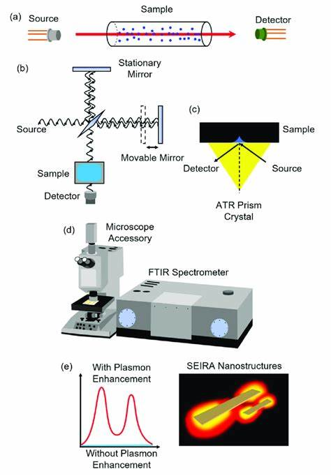
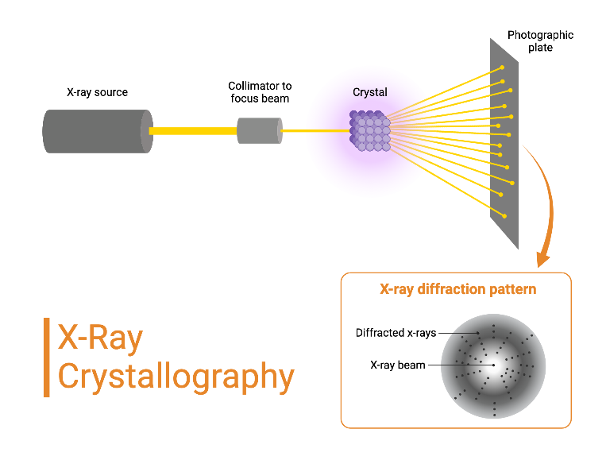
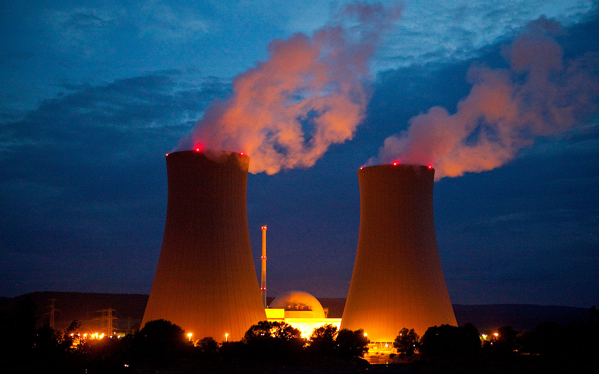

Magnetic Resonance Imaging (MRI)
Definition
Non-invasive imaging technique using magnetic fields and radio waves to visualize internal body structures.
Chemistry Principles
Relies on the alignment and resonance of hydrogen nuclei (protons) in water molecules under a strong magnetic field.
Applications
- Medical: Enables early diagnosis of tumors, neurological disorders, and musculoskeletal injuries.
- Economic: Reduces costs associated with invasive surgeries.
- Social: Improves patient quality of life through painless diagnostics.
- Educational: Demonstrates principles of quantum mechanics and nuclear magnetic resonance (NMR) in classrooms.
Safety
Requires shielding from metallic objects and rigorous equipment maintenance to prevent accidents.
Infrared Spectroscopy
Definition
Analyzes molecular vibrations using infrared light absorption to identify chemical compounds.
Chemistry Principles
Molecules absorb specific IR wavelengths corresponding to bond vibrations (e.g., stretching, bending).
Applications
- Criminal Investigations: Identifies unknown substances in forensic labs.
- Education: Teaches students about functional groups and molecular structure.
- Environmental: Detects pollutants in air/water samples.
Safety
Requires proper handling of hazardous samples and calibration of instruments.
X-ray Crystallography
Definition
Determines atomic/molecular structures by analyzing X-ray diffraction patterns in crystals.
Chemistry Principles
X-rays scatter off electron clouds, revealing 3D atomic arrangements.
Applications
- Medical: Critical for drug design (e.g., HIV protease inhibitors).
- Economic: Drives innovation in materials science (e.g., superconductors).
- Educational: Illustrates crystallography in chemistry curricula.
Safety
Requires lead shielding and protocols to minimize radiation exposure.
Nuclear Energy
Definition
Energy generated from nuclear fission (splitting uranium/plutonium nuclei).
Chemistry Principles
Chain reactions release energy via mass-to-energy conversion (E=MC^2)
Applications
- Environmental: Low carbon emissions compared to fossil fuels.
- Economic: Provides high energy output with minimal fuel.
- Social: Powers cities and industries reliably.
Safety
Strict waste management (e.g., Canadian CANDU reactors use natural uranium and produce less long-lived waste).
Medical Applications of Spectroscopy
Definition
Techniques: UV-Vis, fluorescence, and Raman spectroscopy.
Chemistry Principles
Light absorption/emission by electrons or molecular vibrations.
Applications
- Medical: Monitors blood glucose (diabetes), detects cancers via fluorescence markers.
- Economic: Reduces healthcare costs through rapid diagnostics.
Safety
Laser safety protocols in Raman spectroscopy.
Mass Spectrometry
Definition
Identifies molecules by ionizing them and measuring mass-to-charge ratios.
Chemistry Principles
Ionization (e.g., electron impact) and magnetic/electric field separation.
Applications
- Medical: Detects metabolic disorders via newborn screening.
- Environmental: Analyzes pollutants like pesticides in water.
- Economic: Accelerates pharmaceutical development.
Safety
Proper ventilation for volatile samples.

Featured Scientist: Ronald J. Gillespie
Biography
Developed the Valence Shell Electron Pair Repulsion (VSEPR) theory to predict molecular geometry based on electron pair repulsion.
Contributions
- Education: Foundation of high school and university chemistry courses.
- Industry: Guides drug design and nanotechnology.
- Society: Enables understanding of pollutant interactions and material properties.